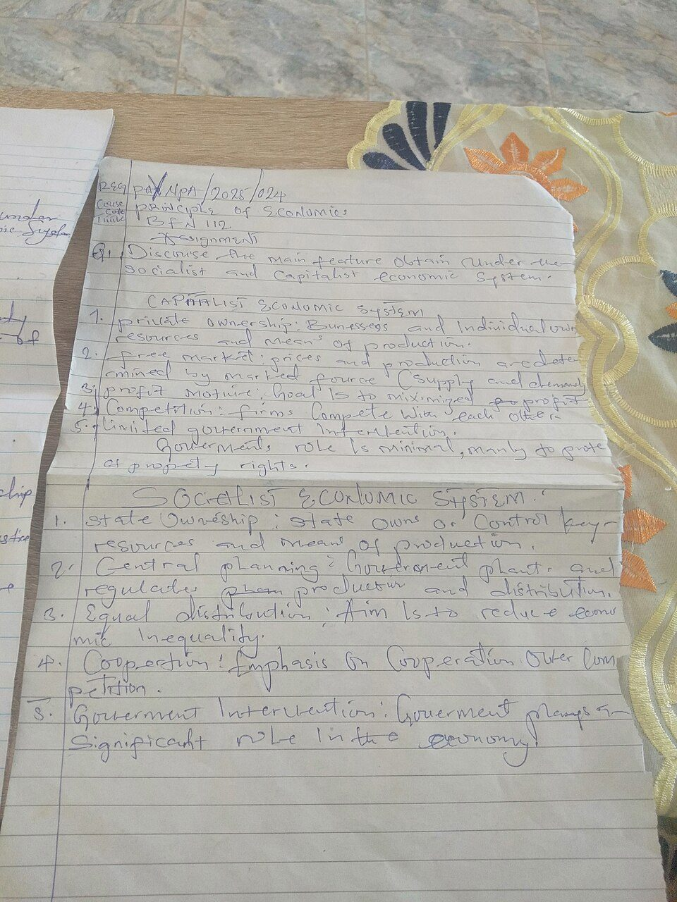
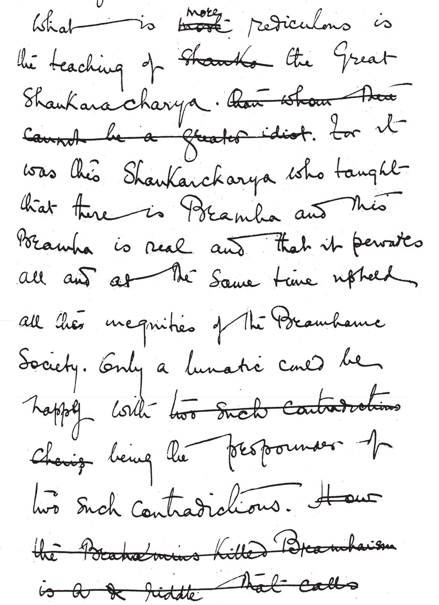

image-to-text · vision → text (handwriting OCR) · WASM · ~64 MB
Printed-text OCR is a solved problem; handwriting is not — every person's letterforms are different. This TrOCR checkpoint is fine-tuned on the IAM handwriting database: a Vision Transformer looks at a line of handwriting and a text decoder writes it out, one token at a time — entirely on your device.
| Model | Xenova/trocr-small-handwritten (ONNX of microsoft/trocr-small-handwritten) |
|---|---|
| Task / pipeline | image-to-text |
| Architecture | ViT-style image encoder → RoBERTa-style text decoder (VisionEncoderDecoder, cross-attention) |
| Trained on | IAM Handwriting Database — modern English handwriting, single text lines |
| Input | A single line of handwritten text (draw it, or crop to one line) |
| Output | The transcribed characters, generated token by token |
| Quantization | q8 (8-bit) ONNX — separate encoder + decoder graphs |
| Backend | WebAssembly (runs anywhere; no WebGPU needed) |
| Download | ~64 MB, cached after first load |
| License | MIT (microsoft/trocr-small-handwritten) |
| Web APIs | WebAssembly, Web Workers, Canvas, Pointer Events, FileReader — all Baseline widely available |
The most natural way to test a handwriting model: write something. Draw a line on the pad below (mouse, finger, or pen) and hit Read — or drop a photo of a handwritten note and drag a box around one line. TrOCR is a single-line reader.
Write a line here — then Read it.


Drag on the image to select a line.
Handwriting recognition here is autoregressive generation, not template matching. The encoder reads the line into patch embeddings once; then the decoder emits the transcription one token at a time, each conditioned on the image and everything decoded so far — which is how TrOCR resolves ambiguous strokes from context (is that cl or d? the surrounding word decides). The trace below shows every token as it arrived, with the elapsed time. The first token is the slow one (it includes the image encode); the rest come faster.
An enormous amount of the world's text is still handwriting: meeting notes, whiteboards, forms, prescriptions, letters, historical archives. Handwriting OCR turns those pen strokes into searchable, copyable, translatable characters — and doing it locally means the note never leaves the device, which matters for exactly the things people write by hand (medical, legal, personal).
Write a word or pick a sample line — watch handwriting become text, token by token.
Digitise a handwritten note: read each line into an editable, copyable list.
Live camera handwriting reader — point your camera at a note and read it on the fly.
Handwriting → translation: read a handwritten line, then translate it locally.
The base call is two lines with Transformers.js:
import { pipeline } from "@huggingface/transformers";
const reader = await pipeline(
"image-to-text",
"Xenova/trocr-small-handwritten",
); // downloads + caches ~64 MB once
const out = await reader(lineImageURL, { max_new_tokens: 48 });
// → [{ generated_text: "Meeting moved to Friday 3pm" }]
The important bit is the input: TrOCR expects one line of handwriting, so
this page hands it either the drawing pad's bitmap or a cropped region of a photo. For "See
inside", it passes a TextStreamer into the same call — the streamer fires once
per decoded token, so the page renders the transcription as it forms and records each token's
arrival time, all off the main thread in a Web Worker. Note: the IAM training data
is modern English handwriting on clean lines — old copperplate, heavily crossed-out text, and
very stylised writing are honest limits, not bugs.